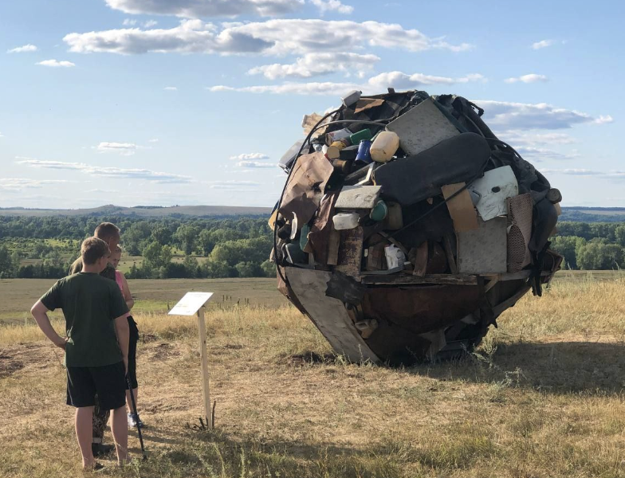
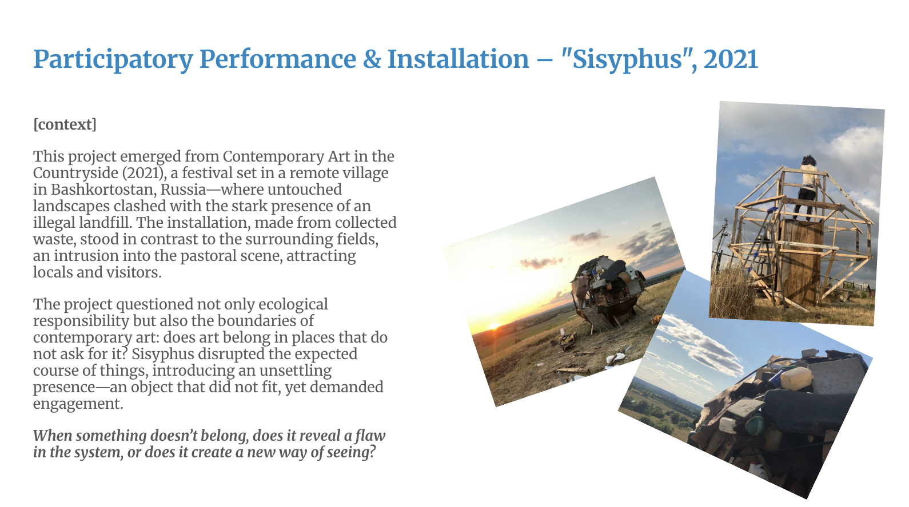
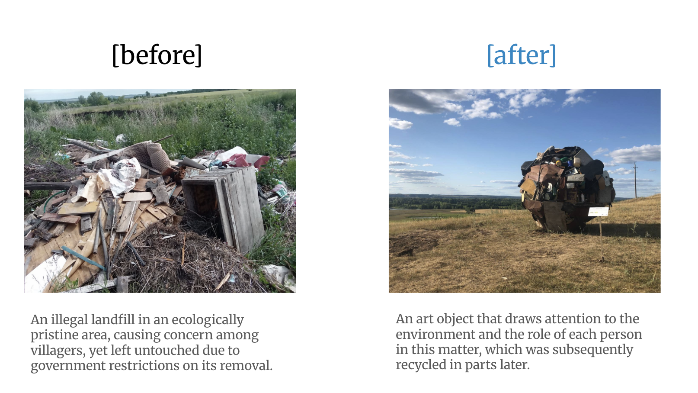

Партиципаторный перформанс и инсталляция / 2021
Сизиф
- Коллективный проект
- 2021

О работе
Сфера из выброшенных вещей, помещённая в сельский пейзаж. Участникам предлагалось толкать её или останавливать её движение — совместное действие, которое возвращает к мифу о Сизифе и ставит вопрос: что произойдёт, если мы решим остановиться?
В образе сферы соединяются шар жука-навозника и Земля, отягощённая избытками цивилизации. Наряду с экологической ответственностью работа исследует границы современного искусства: где ему место и как непривычный объект меняет наше восприятие пространства.
Что, если перестать толкать? Что, если прервать привычный ход вещей — наш выбор?
Объект одновременно чужероден пейзажу и символически связан с ним: он напоминает о повторяющемся человеческом бремени. Попытка толкнуть или удержать сферу превращает миф о бесконечном труде в возможность выбора.
Принадлежит ли искусство местам, которые его не просили? Когда что-то не вписывается, обнаруживает ли это изъян в системе — или открывает новый способ видеть?
Контекст
Проект создан для фестиваля Contemporary Art in the Countryside (2021) в деревне в Башкортостане. Отправной точкой стал контраст между открытым природным ландшафтом и стихийной свалкой рядом. Собранные отходы превратились в объект, который нарушал привычный вид поля и вовлекал в диалог местных жителей и посетителей.
Впоследствии материалы инсталляции были частично отправлены на переработку.
Художники
- @tridzatvosemobezyn
- @nccptd
- @mayandme
- Ксения Некипелова
Документация


От материала к объекту

До
Стихийная свалка в природном ландшафте. Она вызывала беспокойство жителей, но оставалась на месте из-за административных ограничений на её вывоз.
После
Собранные отходы стали арт-объектом, привлекающим внимание к окружающей среде и роли каждого человека. Впоследствии материалы инсталляции были частично переработаны.